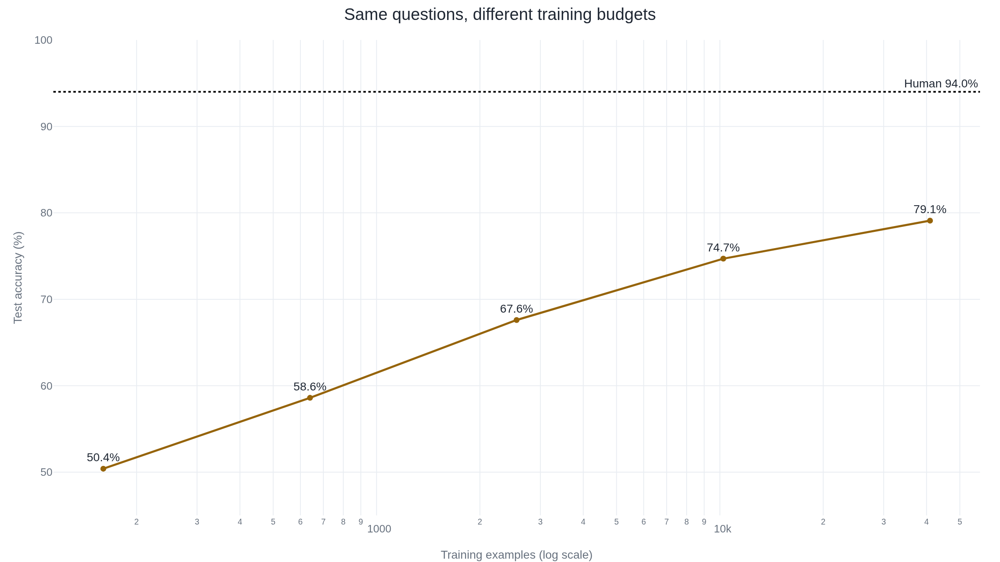

On the same WinoGrande questions, more training lifts the score from 50% to 79%
To rebuild a commonsense test that machines were passing without the reasoning it required, its designers filtered out the questions a model could already guess, and within a year the machines were near the human score again.
Why this matters
WinoGrande is one of the numbers on almost every new language model's report card, listed as a commonsense-reasoning score, usually somewhere in the 70s or low 80s against a human 94. This lesson takes that number apart: where it comes from, how its makers made it hard on purpose, and why a high score on it does not mean what it looks like it means. By the end you will be able to read a WinoGrande figure and know how its makers built it, why the same questions can score 50% or 79%, and what a high number does not settle about a model's reasoning.
- 01
- BERT's near-human score on a reasoning test collapsed once the shortcut was closed: the same story of a benchmark shortcut, told from the model's side.
- 02
- The 'human-level' language score is an average of nine English tests: how a benchmark suite folds several tasks into one headline number.
- 03
- An ensemble beat SuperGLUE's human score before DeBERTa: the harder suite that carries the Winograd task as its WSC subtask.
A pronoun that turns on one word
The trophy does not fit in the suitcase because it is too big. Change one word, big to small, and the pronoun points the other way: now the suitcase is too small, and it is the suitcase. A person resolves the reference without noticing the work. A program has to know that a big object will not go inside a small container, and then work out which object the sentence just made too big.1
That pair is a Winograd schema: two sentences differing in one word, with a pronoun whose correct referent flips when the word changes. Hector Levesque, Ernest Davis, and Leora Morgenstern proposed them in 2012 as a commonsense test a machine could not pass by counting words.1 They called this being Google-proof: you cannot look the answer up in a table of word co-occurrences, because the wrong reading and the right one rest on words about equally common in ordinary text.1
WinoGrande is the benchmark that took that idea and built 43,972 such problems, up from the original collection of a little more than a hundred.2 Its score now rides on the report cards of systems from GPT-3 to Llama 2, printed as a commonsense-reasoning number.34 Its difficulty was engineered, question by question.
The old test got solved without the reasoning
The original challenge stayed small. Levesque, Davis, and Morgenstern published a collection of a little more than a hundred schemas and proposed scoring a system on tests of fifty questions.1 A later standardized set, WSC273, fixed 273 of these schemas as a shared test, and that 273-question set is what most papers mean when they cite the Winograd Schema Challenge.5 The 2012 paper itself reports no machine scores. It is a design, not a result.1
The design held a while, then stopped. The one time the challenge ran as a formal competition, at the IJCAI conference in 2016, six systems entered and the best answered 58% of a 60-question set, barely above the 50% a coin flip earns.5 Within three years that had inverted. By 2019 transformer language models were scoring above 90% on WSC273.5 The scores looked like commonsense reasoning had arrived.
It had not. Some of the questions were answerable by exactly the word statistics the schema was meant to defeat. When Trichelair and colleagues went through WSC273 by hand, they found that 13.5% of the items could be settled by simple association: the correct answer word just occurs more often near the context word than the wrong one does, no reasoning required.6 A model that has read enough text picks those up for free. Reviewing the record later, two of the original challenge's authors, Davis and Morgenstern, judged that the high scores did not reflect the ability the test was built to find.
Solving Winograd schemas is not a surrogate for the ability to do commonsense reasoning, let alone for intelligence.5 Kocijan, Davis, Lukasiewicz, Marcus, and Morgenstern, "The Defeat of the Winograd Schema Challenge"
Filtering out the questions a model can guess
WinoGrande, published in 2019 by Keisuke Sakaguchi, Ronan Le Bras, Chandra Bhagavatula, and Yejin Choi at the Allen Institute for AI, set out to fix both faults at once: the small size and the leftover shortcuts.2 Size was the easy part. Crowd workers wrote fresh schemas, each primed with a random anchor word pulled from WikiHow so the sentences would not all sound alike, and three separate workers checked every one. That produced about 53,000 validated problems.2
The shortcuts were the hard part. The failure has a name: an annotation artifact, a pattern that leaks into a dataset while people are building it and lets a model score well by matching the pattern instead of doing the task.2 In a commonsense set the artifact can be as plain as the correct answer word tending to be the more common one, the same association Trichelair found in the old test.
To strip them out, the team used adversarial filtering: rather than trust people to spot the shortcuts, let a model find them and then delete the questions it finds. Their version, AFLite, works in rounds. It turns every question into a vector from RoBERTa, a standard language model, then trains simple linear classifiers on random slices of the data over and over and watches which questions they keep getting right. A question that a plain linear model predicts correctly again and again carries an exploitable pattern, so AFLite throws it out.2
What comes out the far end is smaller and harder. The full pool holds 43,972 problems. The filtered set the hard scores are reported on, the one the paper calls debiased, is 12,282.2 You can watch the shortcut leave. The team summarized how strongly the answer words alone gave the answer away, as a single divergence number, and it fell from 2.53 to 0.12.2 The filter is not specific to pronouns. Run on a natural-language inference set instead, it drops BERT's accuracy from 92.0% to 63.5% while people keep answering the questions.7
The score moves with the training budget
On the filtered set, three crowd workers voting together answer 94.0% of the questions correctly. That is the human figure WinoGrande reports.2 The best machine at publication, RoBERTa fine-tuned on the whole training set, reached 79.1%.2 A fifteen-point gap between people and the strongest model, on a test built to demand reasoning, is what made WinoGrande look like a real measure of it.
That 79.1% is not a fixed property of the questions, though. It is a property of the questions together with how much training the model was given. The team ran the same RoBERTa on the same filtered test after training it on larger and larger slices of the data, and the score climbs the whole way. Trained on 160 examples it scores 50.4%, no better than guessing. At 640 examples, 58.6%. At about 2,500, 67.6%. At about 10,000, 74.7%. On the full 40,938, 79.1%.2

The questions never change across that curve. Only the training budget does. So how hard WinoGrande is has no one answer: it is 50% hard or 79% hard depending on a number you get to set. The difficulty is a fact about the construction, the model the filter was tuned against, and the training allowed, not a fixed reading of how much reasoning the task takes.
The near-human scores came back
WinoGrande exists because near-human scores on the old test turned out to be hollow. Within about a year of its release the same shape returned. By 2021 a transfer-trained system called UNICORN reported 86.6% on WinoGrande, roughly seven points under the human 94.0%.8 GPT-3, in 2020, reached 77.7% with a few examples in its prompt and no fine-tuning at all.3 Llama 2's 70-billion-parameter base model scored 80.2%.4 The fifteen-point gap that made WinoGrande interesting was closing.
Two things complicate reading the closing gap as reasoning gained. The first sits in the model reports themselves. Both the GPT-3 paper and the Llama 2 paper flag possible contamination of their training data with the test set, in their own words, and publish the WinoGrande number anyway.34 A score rises when a model has already seen the answers, and these labs say plainly they could not rule that out.
The second is the filter. AFLite defines hard relative to one model's view of the data, RoBERTa's vectors. Its own authors say so, and add a warning: deleting the items a model finds easy also deletes some items that are easy for an honest reason, not only items with shortcuts.7 So a low machine score partly reflects what one model family could not represent, which is not by itself reasoning difficulty. Davis and Morgenstern press harder. Going through WinoGrande's released questions, they argue that many stay solvable by word association and do not come close to meeting the original schema rules, with examples where the supposedly irrelevant words still lean toward one answer.5
- Far larger than the test it replaced: 43,972 problems against about a hundred schemas.
- Every problem checked by three separate workers.
- The answer-word tell fell sharply under filtering, from 2.53 to 0.12.
- Genuinely harder for models than WSC273 had become by 2019.
- Hard is defined by one model's vectors, not by reasoning.
- The score rises with training budget on the very same questions.
- Residual word-association items remain, by the original authors' count.
- The top scores come from models that flag possible contamination.
None of this makes WinoGrande a bad benchmark. It is a real advance on the test it replaced: bigger, validated, and cleared of the specific word-association shortcuts that broke the original.2 It still is not a clean readout of reasoning. The paper even overreaches its own math here: it states that reaching the human 94% would take over 118,000 training examples, though the fit it prints does not reach 94% by that size.2
So what does a WinoGrande number on a model card license in 2026? That the model, trained on however much data it was trained on, answers this one filtered set of pronoun questions at some rate. It does not license the jump to a settled quantity of commonsense reasoning. The score moves with the training budget, the filter's sense of hard is tied to a single model, and the labs reporting the highest numbers cannot promise the answers never leaked.
The takeaway
A WinoGrande score is not a reading of how much commonsense a model holds. It is how often the model answers one filtered set of pronoun puzzles, and that rate moves with how much the model was trained and with which model the filter was tuned against. The benchmark's makers did something real: they took a test machines had learned to pass by counting words, rebuilt it from about a hundred schemas to nearly forty-four thousand problems, and used a model to hunt down and delete the questions that could still be guessed. What they could not do was make the leftover score mean reasoning and nothing else. When a model card next lists a WinoGrande number in the low 80s, read it the way the original challenge's authors now read theirs. It is a hard pronoun test the model does fairly well on, not the finish line for common sense it was once taken to be.
- 01
- WinoGrande: An Adversarial Winograd Schema Challenge at Scale: the paper that owns the construction, the AFLite step, and every figure here.
- 02
- The Defeat of the Winograd Schema Challenge: two of the original challenge's authors on what the high scores did and did not show.
Sources
- Levesque, Davis, Morgenstern · The Winograd Schema Challenge (KR 2012)
- Sakaguchi, Le Bras, Bhagavatula, Choi · WinoGrande: An Adversarial Winograd Schema Challenge at Scale
- Brown et al. · Language Models are Few-Shot Learners (GPT-3)
- Touvron et al. · Llama 2: Open Foundation and Fine-Tuned Chat Models
- Kocijan, Davis, Lukasiewicz, Marcus, Morgenstern · The Defeat of the Winograd Schema Challenge
- Trichelair et al. · On the Evaluation of Common-Sense Reasoning in Natural Language Understanding
- Le Bras et al. · Adversarial Filters of Dataset Biases (AFLite)
- Lourie, Le Bras, Bhagavatula, Choi · UNICORN on RAINBOW